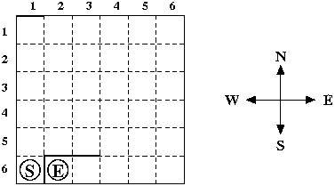

In this problem you have to solve a very simple maze consisting of:
A maze may look like this:
You have to find a shortest path between the square with the start marker and the square with the end marker. Only moves between adjacent grid squares are allowed; adjacent means that the grid squares share an edge and are not separated by a wall. It is not allowed to leave the grid.
The input consists of several test cases. Each test case consists of five lines: The first line contains the column and row number of the square with the start marker, the second line the column and row number of the square with the end marker. The third, fourth and fifth lines specify the locations of the three walls. The location of a wall is specified by either the position of its left end point followed by the position of its right end point (in case of a horizontal wall) or the position of its upper end point followed by the position of its lower end point (in case of a vertical wall). The position of a wall end point is given as the distance from the left side of the grid followed by the distance from the upper side of the grid.
You may assume that the three walls don't intersect with each other, although they may touch at some grid corner, and that the wall endpoints are on the grid. Moreover, there will always be a valid path from the start marker to the end marker. Note that the sample input specifies the maze from the picture above.
The last test case is followed by a line containing two zeros.
For each test case print a description of a shortest path from the start marker to the end marker. The description should specify the direction of every move ('N' for up, 'E' for right, 'S' for down and 'W' for left).
There can be more than one shortest path, in this case you can print any of them.
1 6 2 6 0 0 1 0 1 5 1 6 1 5 3 5 0 0
NEEESWW